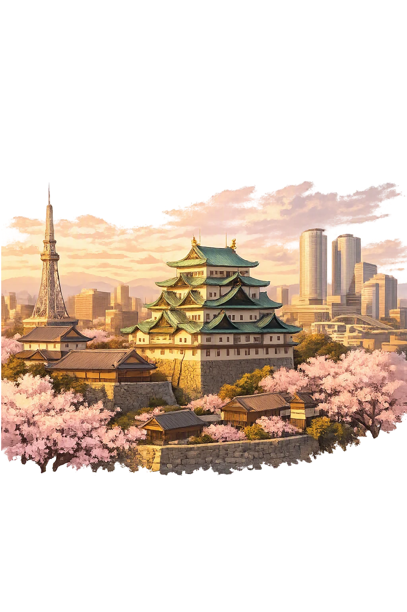
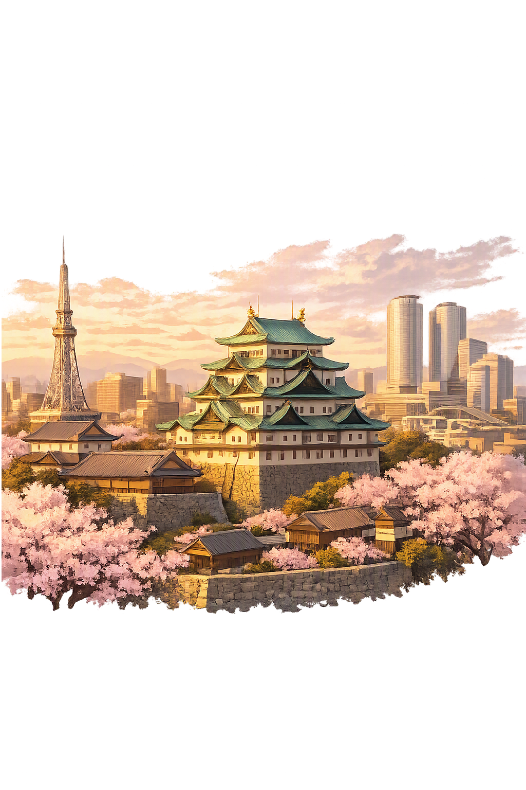

Stories of Nagoya
Nagoya's mythology is more historical than divine: a crossroads named for a 'peaceful ancient house,' a castle built to end the age of war, a conference that settled Japan's succession, and a merchant city that traded the sword for the loom and then for the assembly line.
The name is older than the castle, and its meaning is a folk etymology the city wears proudly. 名古屋 is traditionally read 'peaceful ancient house' — na from 名, 'name, famous,' goya a softened form of koya, 'old house' — explained by the Nagoya Shrine, an old Owari sanctuary whose grounds lay within what became the castle town. Historians treat the derivation with caution: the same syllables appear in several Owari place names, and medieval documents already know 'Nagoya' as an ordinary locality, not a poetic one. But the etymology's modesty suits the city it names — neither Kyoto's courtly antiquity nor Edo's martial swagger, but a prosperous, unpretentious middle. The temple's framing turns the question around: a 'peaceful ancient house' is precisely what a castle town promises its merchants — safety, continuity, and a roof that outlasts the swords.
After Sekigahara (1600) gave Tokugawa Ieyasu the country, he turned to securing its spine. In 1610 he ordered a great castle raised at Nagoya — a site no Japanese ruler had ever fortified — to command the Tōkaidō highways where eastern and western Japan meet, and to house his ninth son, Yoshinao, as founder of the Owari branch. Stone and timbers were floated down from Sunpu and hauled over from the dismantled Kiyosu castle upstream; the great keep was complete by 1612, and Yoshinao entered as first lord of Owari in 1616. The keep's roof carried the city's enduring emblem: a pair of golden shachihoko — tiger-headed carp, water beasts that guard against fire — whose shine announced that this was Tokugawa work. The castle was never attacked in war. Its whole career is the message it was built to send: the new shogunate could raise an unneeded fortress at the center of the country and call it peace.
Fourteen kilometers up the river stands Kiyosu, the older castle that ruled Owari before Nagoya existed, and the stage for one of the hinges of Japanese history. In June 1582, weeks after Akechi Mitsuhide burned Oda Nobunaga at Honnō-ji, the Oda retainers assembled at Kiyosu to decide who would inherit a conquest half-made. The real contest was between Toyotomi Hideyoshi and Shibata Katsuie; it was settled in favor of Nobunaga's infant grandson Hidenobu — and, in practice, in Hideyoshi's favor, since the settlement freed him to finish the unification and take the title of kampaku. The chronicle tradition and the Cambridge History of Japan both mark the conference as the turn between the age of warlords and the age of unification. Nagoya's story begins, in a sense, at that table: the castle Ieyasu would raise downstream in 1610 was the architectural afterthought of decisions taken at Kiyosu in 1582.
The samurai city became a merchant city almost as soon as the swords were put away. With the Meiji abolition of the domains in 1871, the Owari warriors' stipends dissolved into commerce, and Nagoya's location — the rail junction of the Tōkaidō and the sea-lanes of Ise Bay — made it the natural entrepôt of the Chūbu region; municipal status came in 1889. The city industrialized along its oldest craft instincts: cotton and wool weaving first, then, with the founding of Toyota in 1937, automobiles, so that the Chūkyō industrial zone became one of the three engines of Japanese manufacturing. The war found the city: the air raids of 1945 burned the castle keep, and the concrete tower that replaced it in 1959 has only recently begun giving way to a wooden, document-faithful reconstruction of the lost Honmaru Palace, opened in 2018. The 'peaceful ancient house,' bombed, burned, and rebuilt twice in a century, keeps the bargain of its name.
Commerce, Craft, and Tokugawa Power
Nagoya is Japan's fourth-largest city and a historic center of commerce and craftsmanship. Built around the castle commissioned by Tokugawa Ieyasu in 1610, Nagoya grew into a hub of ceramics, textiles, automotive manufacturing, and trade. Its name — 'peaceful ancient house' — reflects a city that has long served as a stable crossroads.
The Tokugawa fortress ordered by Ieyasu in 1610 and completed in 1612, crowned by the famous golden shachihoko roof ornaments.
From cotton weaving to the Toyota Motor Corporation, the Chūkyō zone became one of the three engines of Japanese manufacturing.
Famous for miso-katsu, tebasaki, kishimen, and the beloved 'morning' coffee custom that arrives with toast and egg.
A strategic point on the Tōkaidō linking eastern and western Japan — the reason the castle exists at all.
From the original script to the living URL
名古屋
The name in its original Japanese form. Nagoya (名古屋) is attested in the source tradition — “Peaceful ancient house”. Its original diacritics and script distinctions carry the full phonetic and orthographic weight of the source tradition.
nagoya
The plain nagoya form is identical to the Unicode restoration. Because this name is already written in Latin letters, no diacritics, stress, or script information were lost — only capitalization differs.
Nagoya
The Unicode restoration does not need to recover lost marks for Nagoya. Its value is canonical spelling and consistent cataloguing, not the reconstruction of erased orthography. The domain is readable as-is to both DNS and humanity.
Nagoya.com
This restoration is written entirely in ASCII letters — no Punycode encoding stands between Nagoya and the DNS. The domain reads identically to machines and to human eyes.
Owned, ideal, and ASCII forms of Nagoya
Nagoya
Restores 名古屋. The full Unicode restoration. nagoya.com is not in the PuniCodex collection — it is watched for release; if it drops, this temple upgrades to an owned flagship.
How Nagoya was spoken
How Nagoya is preserved in writing
A bespoke provenance study for Nagoya is being prepared by the PUNICODEX scholarly team.
Contribute scholarly provenance →Not every sacred place begins holy. Some become important simply by being where roads meet — and Nagoya is the purest case in Japan. There was no ancient shrine city here, no imperial capital, no mythic island: a plain at the crossroads, a name meaning 'peaceful ancient house,' and a shogun's decision to build an unnecessary fortress. Yet crossroads accumulate meaning the way rivers accumulate silt. The castle made a market; the market made a merchant culture; the merchants made an industrial belt; the industry made a global city. The golden shachihoko swimming on the keep's ridge beam are the perfect emblem of the whole process — mythical beasts pressed into service as fire insurance, wonder made practical. Nagoya suggests that holiness, in the long run, may be nothing more mysterious than a place where human attention has gathered long enough to compound.
Enter Extended Lore